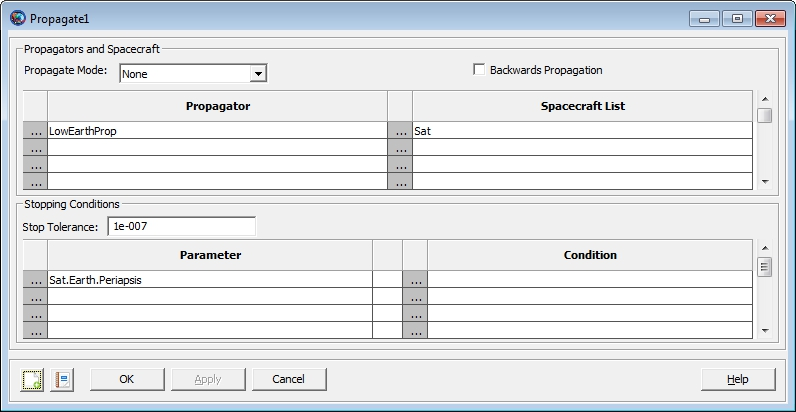

Table of Contents
The objective of this tutorial is to teach you how to create a spacecraft and a propagator, and then propagate the spacecraft to orbit perigee by following these basic steps:
Create a spacecraft and set its epoch and orbital elements.
Create and configure a propagator.
Modify the default Orbit View to visualize the trajectory.
Configure the mission sequence to propagate the spacecraft to periapsis.
In this section, you'll learn how to set a spacecraft's initial epoch and classical orbital elements. You'll need GMAT open with the default mission loaded. The default mission is loaded when a new session of the GMAT executable is started or when the New Mission button in the Toolbar is clicked.
Working from the GUI, you can create a new spacecraft by starting at the Resource Tree.
Right click on the Spacecraft folder, and select Add Spacecraft
Rename the spacecraft by right-clicking on the new spacecraft and selecting Rename from the drop down menu. For this tutorial, name the Spacecraft "Sat".
Double left click on the Spacecraft icon for the new spacecraft Sat in the Resource Tree to open the Spacecraft's dialog box. If it is not already selected, click on the Orbit Tab.
Left-click the Epoch Format drop-down menu and select UTCGregorian. You'll see the value in the Epoch field change to the UTC Gregorian epoch format.
Left-click in the Epoch field, and type the desired value of 22 Jul 2014 11:29:10.811 (or you can cut and paste from the text in this tutorial).
Save the changes by left clicking the Apply button at the bottom of the window. In the first figure below you see the orbit tab after correctly setting the epoch to the desired value.
We'll use the Keplerian orbital elements for this tutorial and we'll enter them with respect to Earth's MJ2000 Equator system.
Open the spacecraft dialog box for the spacecraft named Sat if it is not already open. (See section named Setting a Spacecraft's Epoch just above if you don't remember how to do this).
Change the state type to Keplerian by left-clicking on the State Type drop down menu and selecting "Keplerian". You will see the GUI reconfigure to the Keplerian representation.
Set the values in the GUI to those seen in the image below.
Compare the GUI to the screen capture below to ensure you have completed the steps correctly.
Save the changes and close the dialog box by pressing the OK button.
Save your work to the hard disk, press the save button located in the toolbar. If this is the first time you've saved the mission, you'll be prompted to provide a name and location for the file.
 |
Figure: Spacecraft State Setup
In this section you'll learn how to create a new propagator from the GUI. This involves selecting a numerical integrator and a force model. Let's start by creating a new propagator from the GUI.
Locate the Propagators folder in the Resource Tree.
Right-click on the Propagators folder and select Add Propagator from the drop-down menu.
Rename Propagator1 as "LowEarthProp". To do this, right click on the newly created Propagator1 and select Rename. In the dialog box that appears, type LowEarthProp and hit OK.
Look at the dialog box for LowEarthProp by double left clicking on its icon under the Propagators folder. On the left side of the propagator dialog box you see where you can select the desired numerical integrator and configure it for your application. On the right hand side of the panel are combo boxes and lists that allow the user to set up the force model. Now let's look at how to configure a force model.
For this tutorial we will use an Earth 10x10 non-spherical gravity model, Jacchia-Roberts atmospheric model, and point mass perturbations from the Sun and Moon.
Open LowEarthProp from the Propagators folder in the Resource tree
Locate the Primary Bodies group on the Propagator dialog box. In the Gravity group box, change the degree and order to 10 by left clicking in the text field and typing in the values.
Locate the Atmosphere Model pull-down menu in the Drag group.
Left click on the pull-down menu and select JacchiaRoberts. (For now we will leave the default options for Jacchia-Roberts model)
Left click on the Select button to the right of the Point Masses text box input field, which brings up a list box containing all gravitational bodies that have not been included in the Primary Bodies list (See Figure below).
Left click on "Sun" under the available bodies list, and then left click the right arrow found between the available bodies and Selected Bodies list boxes.
Add the Moon (named Luna in GMAT) following the same procedure as the preceding step.
Left click on the OK button to save changes.
 |
Figure: Force Model Point Mass Configuration
Below is an illustration after correctly configuring the force model according to the instructions above.
 |
Figure: Force Model Configuration
In this section, we'll configure the default Orbit View plot to show the spacecraft we've created above. We'll remove DefaultSC from the list of objects to appear in the plot, add Sat, and change the view point so we can see the entire orbit when we propagate the spacecraft.
Locate the Output folder under the Resource Tree and double-left-click on DefaultOrbitView to open its dialog box.
Locate the View Object group, and find the Selected Spacecraft list.
Left click on DefaultSC under Selected Spacecraft and then click the left arrow button that appears to the left of the Selected Spacecraft list. This removes DefaultSC from the plot.
Locate the Spacecraft list in the View Object group.
Left click on Sat, and then left click on the right-pointing arrow button that appears to the right of the Spacecraft list.
The orbit for Sat is a highly eccentric orbit, and to view the entire orbit, we need to change the settings in the View Definition group.
Locate the View Point Vector settings in the View Definition group.
In the text boxes to the right of the ViewPointVector pull-down menu, enter 30000, -5000, and 5000 respectively as shown in illustration below
Uncheck the DrawXY Plane box located in the Drawing Options group.
See the figure below for the correct configuration of DefaultOrbitView after completing the steps above. When you are finished click Ok to save the changes.
 |
Figure: DefaultOrbitView Configuration
The last step in this tutorial is to propagate the spacecraft. To do this, we'll configure a propagate command in the mission and configure it to propagate until the spacecraft reaches orbit periapis.
Locate the Mission tab and left click on it to bring up the mission sequence. The Mission tab is located next to the Resource tab located near the upper left hand corner of the GMAT GUI.
Double left click on the event named Propagate1. You will see a dialog box that allows you to configure the command.
Locate the propagator list in the Propagators and Spacecraft group box.
Right click on the field where you see DefaultProp.
Left click on LowEarthProp and hit Ok.
 |
Figure: Propagate Command Propagator Select Dialog Configuration
To propagate the new spacecraft named Sat, we need to add it to the Spacecraft List group where originally you see DefaultSC. To propagate the Spacecraft named Sat:
Right-click in the field where you see DefaultSC.
Remove DefaultSC from the list by left clicking on it and then left-click on the left arrow button.
Left click on Sat and then left click on the right arrow button to add it to the list of spacecraft to propagate.
Left click on the OK button.
Below you see the dialog box after correctly configuring it to propagate the spacecraft named Sat.
 |
Figure: Propagate Command Space Object Select Dialog Configuration
The only remaining thing to do in configuring the propagate event, is to tell the propagator when to stop the propagation.
Locate the Stopping Conditions group, and right click in the field that currently says DefaultSC.ElapsedSecs located in the Parameter column.
Find the Object List and choose Sat instead of Default Sat. (This tells GMAT the stopping condition will be associated with the spacecraft named Sat.)
Locate the Property list in the middle of the dialog box and scroll down to locate Periapsis.
Left click on the word Periapsis, and then left click on the right-pointing arrow found in the center column of the dialog box.
The dialog box below shows an example after correctly performing these instructions. Once you are finished, click Ok to save your changes.
 |
Figure: Propagate Command Parameter Select Dialog Configuration
Having set the propagator, spacecraft, and stopping conditions above, the Propagate1 dialog box should appear as the screen capture below. When you are finished click Ok to save the changes you've made to Propagate1.
|  |
Figure: Propagate Command Configuration
You have now configured the mission and it is time to run it and see the results.
Left-click on the Save button in the toolbar.
Left-click on the Run button in the toolbar.
You should see GMAT propagate the orbit and stop at orbit periapsis. The screen capture below summarizes what you should see after correctly completing this tutorial. You can manipulate the Orbit View plot using your mouse to zoom in and rotate the plot.
 |
Figure: Orbit View Plot after Mission Run